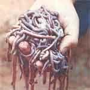
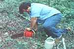

Your whole family can join in collecting high-quality-and salable-bait for free.
The cost of live bait-which has risen along with the price of most everything else in the past few years-can really put a crimp in a family fishing expedition. However, there is an almost sure-fire way to gather your own "fish attracters" . . . using a traditional skill that has been lost in much of the United States but is still alive in parts of northern Alabama. The art is "worm fiddling", and it's practiced nowadays by residents of the mountainous region of Blount County .. . like William (Bubba) Childers, who first learned how to fiddle for worms on fishin' expeditions with his granddaddy.
In just ten minutes, says Bubba, you can gather a whole bucketful of fiddle worms . . . with no more equipment than a rusty handsaw that's missing a few teeth and an old pail. It's best to go worming in the spring, advises our master bait-catcher . . . but you can actually capture the crawlers any time of the year, as long as the ground isn't frozen.
FINDING A PLACE TO FIDDLE
A crucial factor in finding a good site to "play up" the critters is the amount of moisture in the soil. Fiddle worms like damp earth, so in dry weather they move down into the lowlands in search of water. After a rain, however, you might look for your bait on the side of a hill. (Bubba reports that he once roused 300 worms in less than 15 minutes by fiddling at a point just above an underground stream!)
When you've located an area of wet ground, look for the small, round casings that the worms discharge as they work through the soil. Such excretions are usually found among decaying leaves at the base of a young tree ... which is handy, as an available sapling is absolutely essential to the "fiddlin' " technique. (The area around a beech tree is often especially productive because, as the Alabama "musician" explains, "For some reason fiddle worms love to munch on rotting beech leaves.")
The sapling you choose should be about three inches in diameter, which-in most tree species-is large enough to have produced an extensive root system. To make your "fiddlin' stage", just saw down the tree . . . leaving about 12 to 18 inches of stump above the ground. (Needless to say, such an operation should only be performed in your own woodlot!)
HERE COME THE WORMS!
Now-using a dull saw-"fiddle" away ... by simply dragging the cutting tool back 'n' forth across the top of the stump. The vibrations travel through the tree's root network, sending tremors into the earth . . . and the worms are literally jolted to the surface! If the ground is damp, you'll start seeing wigglers in two to five minutes, but-if the soil lacks moisture it'll take a bit longer. You should fiddle in one place for at least ten minutes before giving up and changing sites . . . just keep a-sawin' and usually the crawlers will appear, sometimes as far as 25-30 feet away from the stump. Fiddle worms average between 12 and 15 inches in length, but some may reach as much as two feet long . . . so you can't miss them as they turn up in the soil.
After the worms begin to surface, collect them in a five-gallon bucket. Your pail should have a drainage hole in the bottom (so excess water won't drown the bait), and should be filled with woods dirt. Fiddle worms love the decayed leaves in forest soil, and they'll survive in their bucket home for at least a month. (You should, however, keep them watered . . . and don't forget to throw a little cornmeal or chicken feed on them every week or two.)
LET'S TRY ANOTHER WAY
If you can't find a worn-out saw, there are other methods of fiddling for bait. The "McCullough Technique"-which requires using a chain saw-demands much less effort than does "hand fiddlin' ", and usually results in full buckets. Simply crank up the engine and-with the chain removed or disengaged-hold the instrument against the ground (as shown in the photo) while it runs. The vibrations will bring up the worms, just as the "tune" of the handsaw does.
Another method (the "Cave Man Technique") also requires an 18-inch-high tree stump. But-instead of sawing on the trunk-"Neanderthal wormers" simply pound on the wood with a large rock. This technique is a simple one, but it does in volve a lot more elbow grease than the other methods. ("If I were goin' to do that much work to get fiddle worms, I believe I'd just go out and buy 'em," laughs Bubba.)
SELLING THE LEFTOVERS
Whatever system you employ, you'll probably harvest lots more worms than you need . . . and you can make a handsome profit by marketing your surplus at local fish camps and tackle shops. Fiddies-which make excellent bait for catfish, bass, bream, and trout-are especially valuable because of their length: One worm, broken apart, will easily adorn several hooks, and the pieces are tough enough to stay securely in place.
To package the bait for sale, you'll need either a number of 16-ounce styrofoam cups (put about 25 worms in each one) or-for large orders-12"-square boxes (which should hold 500 to 1,000 wigglers apiece). You can collect either kind of packaging yourself, or order it in bulk from container suppliers.
At seven cents per worm, one cup of the crawlers should sell for about $1.75. And, since you can usually gather 300-400 worms in just two or three hours' work, that's a possible income of about $10 an hour . . . which isn't bad for a "mountain fiddler"!
THE FAMILY THAT FIDDLES TOGETHER . . .
An afternoon's worming expedition can be not only profitable, but also just plain fun for the entire family . . . it's sort of like an old-fashioned Easter egg hunt, as the young'uns eagerly collect the crawlers.
But Bubba reminds us that some precautions should be taken whenever you set off in search of fiddle worms. Before you leave, clothe everybody against insect bites . . . and, of course, keep a sharp eye out for poison oak and ivy while you're in the woods.
And one more thing: Make sure that everyone on the outing is supplied with his or her own pail, because when the wiggling critters begin to pop up in all different directions around the tree stump, you don't want to be caught with only one bucket among you!
|
 Now that's a lot of bait! You can rouse this many fiddle worms in only a few minutes . . . and sell them just as fast. |
Alabama ""fiddler"" Bubba Childers saws on a sapling's stump |
 The McCullough technique -using a power saw held against the ground-is hard work! |
|
After a successful foray into the forest, Bubba and his young friend head far home . . . their bucket full of bait. |
|
|